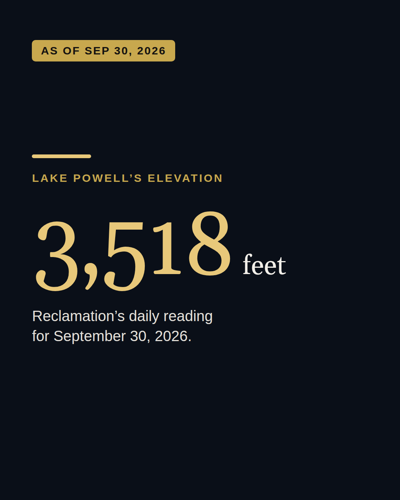
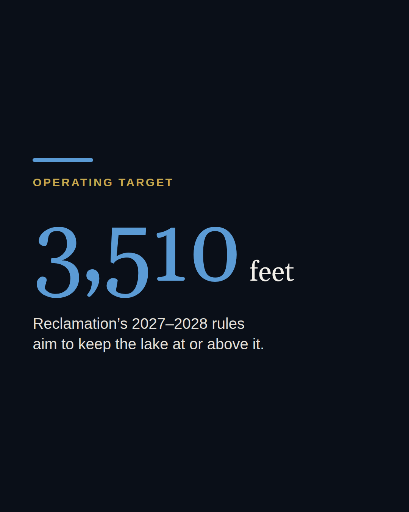
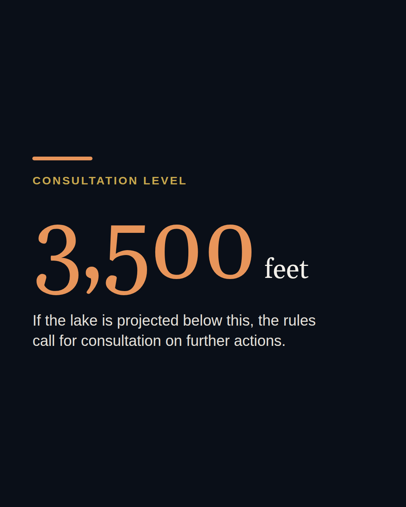
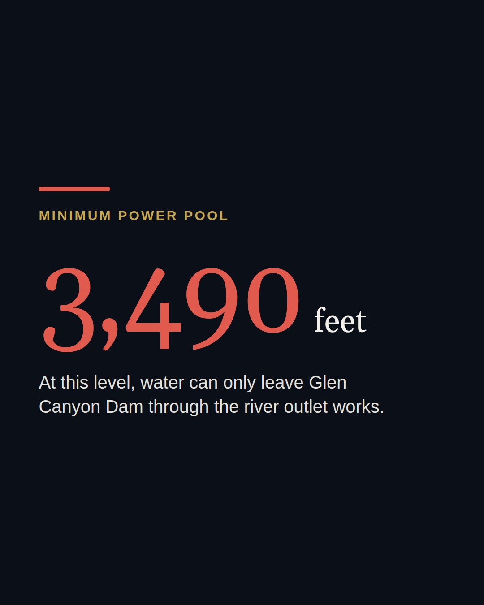
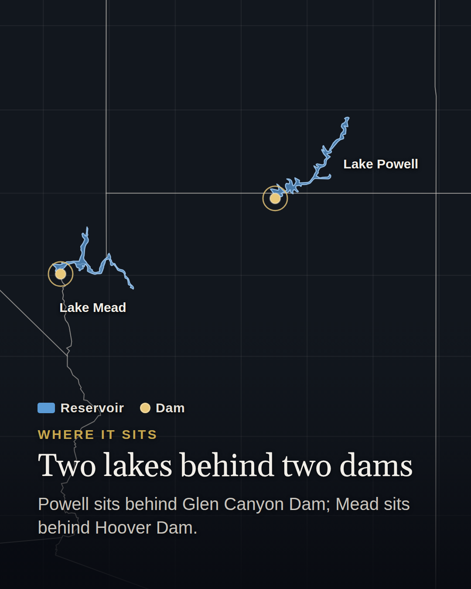
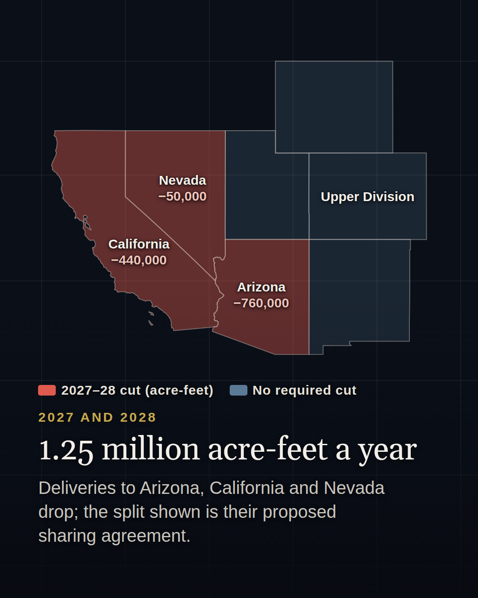
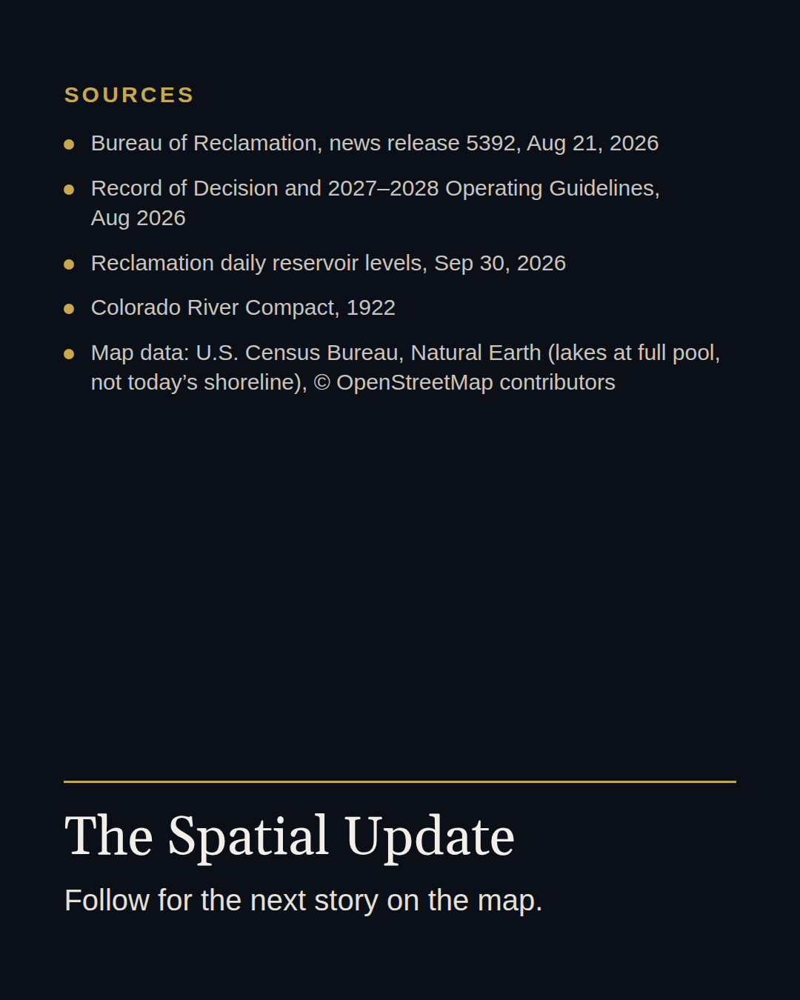

Lake Powell
Instagram post, 8 slides. Published 3 Oct 2026. Levels as of September 30, 2026.
To save a slide on iPhone: press and hold the image, then tap Save to Photos. Do each slide in order, then post them together as a carousel.








Caption
As of September 30, 2026, Lake Powell was 8 feet above its operating target. The lake stood at 3,518 feet. Reclamation’s 2027–2028 rules aim to keep it at 3,510 feet or higher.
Two lines sit below. At 3,500 feet, the rules call for consultation on further actions. At 3,490, the minimum power pool at Glen Canyon Dam, water can only leave through the river outlet works.
Deliveries to Arizona, California and Nevada drop by 1.25 million acre-feet a year in 2027 and 2028. Reclamation’s documents require no cut from the four Upper Division states.
Sources are on the last slide. #LakePowell #ColoradoRiver